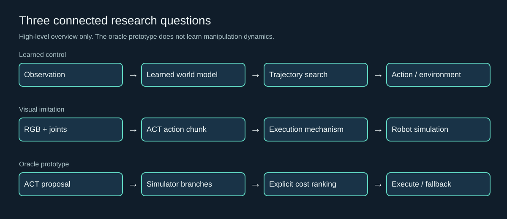
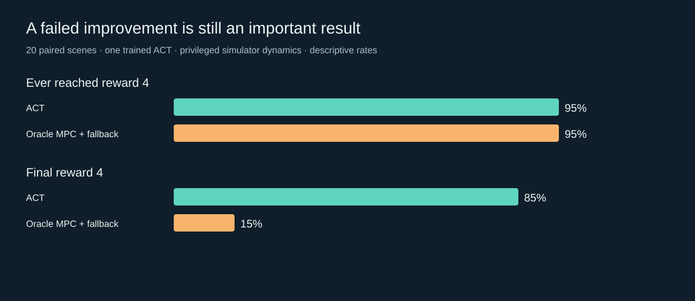

Walker reproduction
Three trained TD-MPC2 seeds. Nine held-out episodes. Between-model standard deviation: 0.19.
Experiments at the interface of learned world models, model predictive control and visual imitation. Reproducible engineering, paired evaluation and failure analysis—without claiming every integration is an improvement.
Simulation only Presentation snapshot · no core sourceThree trained TD-MPC2 seeds. Nine held-out episodes. Between-model standard deviation: 0.19.
45/50 official successes using temporal ensemble; one trained policy. Scripted teacher data, learned-policy evaluation.
Final contact success fell after oracle-model integration. A result to diagnose, not conceal.
The studies ask how planning horizon, execution stride and candidate ranking affect return, terminal behavior and computation. Manipulation and locomotion are separate tasks; their weights are not interchangeable.

The simulator pauses during computation. Video frame rate is not evidence of meeting a real robot's control deadline. The MPC clip is deliberately shown as a failure.
| Study | Evaluation | Finding |
|---|---|---|
| Planning & budgets | Two separate 108-episode matrices | Walker H2: about 17% lower mean decision latency than H3 with close returns in the same-device comparison; adaptive gating did not beat the reference. |
| ACT baseline | 50 paired scenes · 2 execution modes | 86% chunk / 90% temporal success; paired p=0.5, not established as an improvement. |
| Execution stride | 50 new scenes · 250 episodes | Strides 1 / 5 / 10 / 25 / 100: 0 / 6 / 26 / 38 / 82% success for this policy. |
| Simulator MPC | 20 new scenes · 60 final episodes | ACT / MPC both 95% ever-success. Final success: 85% / 15%. Mean controller time: 5.20 / 26.17 ms. |

Official reward-4 contact is not a certified stable-handover metric. Numerical branch differences and fallback were audited. Earlier numerical interruptions were retained privately and are not pooled into the final test matrix. See sanitized aggregate results.
Development used AI assistance. Original algorithms belong to the credited TD-MPC2 and ACT authors. This work supports discussion in embodied intelligence and physics-based simulation; no novel graphics renderer, real-robot deployment or new base algorithm is claimed.